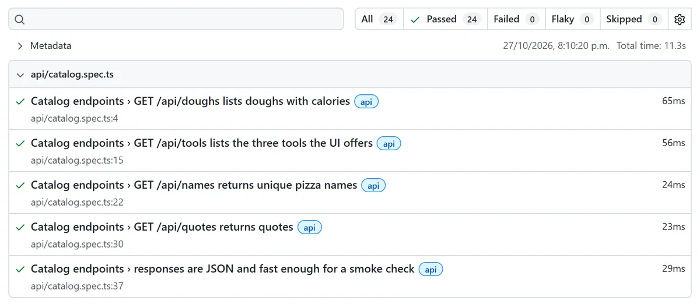

Playwright + k6 against Grafana's demo app
QuickPizza test suite ↗
API, UI and performance suite for QuickPizza. Playwright + TypeScript with Page Objects and fixtures on Chromium and Firefox; k6 smoke and load tests with per-endpoint p95/p99 thresholds. Everything runs on GitHub Actions against a disposable container, so results never depend on a shared host.
- Playwright
- TypeScript
- k6
- GitHub Actions
- Docker

Bugs I found, confirmed in the source code
- F-01Medium
“Calories per slice” ignores the dough, so a stuffed-crust pizza looks 300 kcal lighter than it is.
- F-02High
maxCaloriesPerSliceis not enforced: after 10 retries the API returns a pizza that breaks the limit, with200 OK. - F-03Low · a11y
Three inputs share one
id, so every<label for>points to the first. Screen readers can't tell them apart.
Known bugs are marked test.fail() instead of skipped: they stay visible in every run and turn red the day they're fixed.